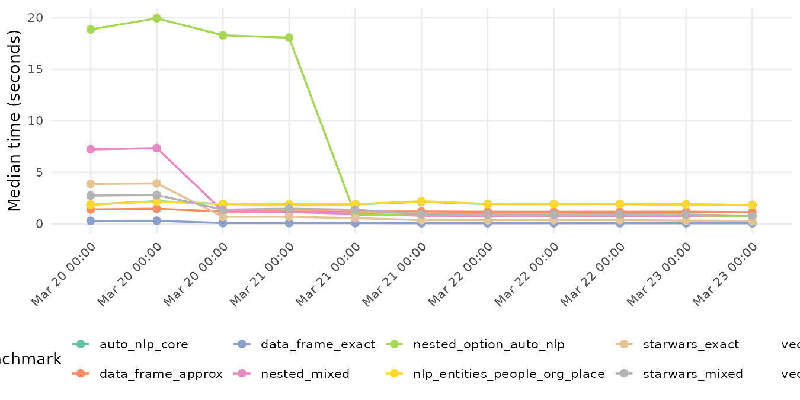

Non-blocking benchmark history for manual review over time.
20260323T183040Z-f44d840main f44d840
| Benchmark | Median | Itr/sec | Mem alloc | GC/sec | Delta vs previous |
|---|---|---|---|---|---|
| anon_auto_nlp_core | 1.827 s | 0.542 | 0.69 MB | 1.084 | -3.2% |
| anon_data_frame_approx | 1.137 s | 0.879 | 1.92 MB | 0.000 | -3.7% |
| anon_data_frame_exact | 0.071 s | 14.020 | 0.36 MB | 0.000 | +0.8% |
| anon_nested_mixed | 0.745 s | 1.348 | 1.97 MB | 2.246 | -4.4% |
| anon_nested_option_auto_nlp | 0.766 s | 1.286 | 0.58 MB | 0.429 | -8.7% |
| anon_nlp_entities_people_org_place | 1.829 s | 0.541 | 0.70 MB | 0.902 | -3.0% |
| anon_starwars_exact | 0.263 s | 3.809 | 1.59 MB | 6.349 | -19.3% |
| anon_starwars_mixed | 0.798 s | 1.255 | 4.08 MB | 4.602 | -12.5% |
| anon_vector_approx | 0.973 s | 1.025 | 2.13 MB | 0.000 | -3.8% |
| anon_vector_exact | 0.054 s | 18.117 | 1.93 MB | 0.000 | +0.4% |
| Timestamp | Machine | Ref | SHA | R | CPU |
|---|---|---|---|---|---|
| 2026-03-23T02:38:24Z | github-actions | ubuntu-latest | main | c2d8136 | 4.5.3 | AMD EPYC 7763 64-Core Processor |
| 2026-03-23T18:30:40Z | github-actions | ubuntu-latest | main | f44d840 | 4.5.3 | AMD EPYC 9V74 80-Core Processor |
| 2026-03-22T16:05:36Z | github-actions | ubuntu-latest | main | 9c7d497 | 4.5.3 | AMD EPYC 7763 64-Core Processor |
| 2026-03-22T16:56:08Z | github-actions | ubuntu-latest | main | 8b086eb | 4.5.3 | AMD EPYC 7763 64-Core Processor |
| 2026-03-22T19:16:48Z | github-actions | ubuntu-latest | main | 5ff3898 | 4.5.3 | AMD EPYC 7763 64-Core Processor |
| 2026-03-21T02:33:04Z | github-actions | ubuntu-latest | main | 9687b45 | 4.5.3 | AMD EPYC 7763 64-Core Processor |
| 2026-03-21T02:43:45Z | github-actions | ubuntu-latest | main | 7612f59 | 4.5.3 | AMD EPYC 7763 64-Core Processor |
| 2026-03-21T03:17:53Z | github-actions | ubuntu-latest | main | d1c88ba | 4.5.3 | AMD EPYC 7763 64-Core Processor |
| 2026-03-20T21:10:51Z | github-actions | ubuntu-latest | main | bc0420e | 4.5.3 | AMD EPYC 7763 64-Core Processor |
| 2026-03-20T21:47:33Z | github-actions | ubuntu-latest | main | 1458afc | 4.5.3 | AMD EPYC 7763 64-Core Processor |
| 2026-03-20T22:04:59Z | github-actions | ubuntu-latest | main | 962bf09 | 4.5.3 | AMD EPYC 7763 64-Core Processor |
| Timestamp | Machine | Benchmark | Median (sec) | Itr/sec |
|---|---|---|---|---|
| 2026-03-22T16:56:08Z | github-actions | ubuntu-latest | anon_nested_mixed | 0.77561626 | 1.2860719 |
| 2026-03-22T19:16:48Z | github-actions | ubuntu-latest | anon_nested_mixed | 0.77803985 | 1.2880342 |
| 2026-03-22T16:05:36Z | github-actions | ubuntu-latest | anon_nested_option_auto_nlp | 0.85357455 | 1.1731184 |
| 2026-03-22T16:56:08Z | github-actions | ubuntu-latest | anon_nested_option_auto_nlp | 0.84722142 | 1.1784654 |
| 2026-03-22T19:16:48Z | github-actions | ubuntu-latest | anon_nested_option_auto_nlp | 0.85728714 | 1.1674882 |
| 2026-03-22T16:05:36Z | github-actions | ubuntu-latest | anon_nlp_entities_people_org_place | 1.92727200 | 0.5163730 |
| 2026-03-22T16:56:08Z | github-actions | ubuntu-latest | anon_nlp_entities_people_org_place | 1.92456273 | 0.5157357 |
| 2026-03-22T19:16:48Z | github-actions | ubuntu-latest | anon_nlp_entities_people_org_place | 1.92968214 | 0.5148435 |
| 2026-03-22T16:05:36Z | github-actions | ubuntu-latest | anon_starwars_exact | 0.36410674 | 2.5034592 |
| 2026-03-22T16:56:08Z | github-actions | ubuntu-latest | anon_starwars_exact | 0.36983360 | 2.4692918 |
| 2026-03-22T19:16:48Z | github-actions | ubuntu-latest | anon_starwars_exact | 0.37023618 | 2.4637573 |
| 2026-03-22T16:05:36Z | github-actions | ubuntu-latest | anon_starwars_mixed | 0.91830845 | 1.0903010 |
| 2026-03-22T16:56:08Z | github-actions | ubuntu-latest | anon_starwars_mixed | 0.91547237 | 1.0906669 |
| 2026-03-22T19:16:48Z | github-actions | ubuntu-latest | anon_starwars_mixed | 0.92713614 | 1.0783484 |
| 2026-03-22T16:05:36Z | github-actions | ubuntu-latest | anon_vector_approx | 1.00603326 | 0.9941018 |
| 2026-03-22T16:56:08Z | github-actions | ubuntu-latest | anon_vector_approx | 1.00532159 | 0.9935976 |
| 2026-03-22T19:16:48Z | github-actions | ubuntu-latest | anon_vector_approx | 1.01137010 | 0.9876078 |
| 2026-03-22T16:05:36Z | github-actions | ubuntu-latest | anon_vector_exact | 0.05451163 | 18.2948492 |
| 2026-03-22T16:56:08Z | github-actions | ubuntu-latest | anon_vector_exact | 0.05410074 | 18.1515508 |
| 2026-03-22T19:16:48Z | github-actions | ubuntu-latest | anon_vector_exact | 0.05566545 | 17.9018698 |
| 2026-03-23T02:38:24Z | github-actions | ubuntu-latest | anon_auto_nlp_core | 1.88658414 | 0.5259664 |
| 2026-03-23T18:30:40Z | github-actions | ubuntu-latest | anon_auto_nlp_core | 1.82671698 | 0.5419283 |
| 2026-03-23T02:38:24Z | github-actions | ubuntu-latest | anon_data_frame_approx | 1.18115788 | 0.8462597 |
| 2026-03-23T18:30:40Z | github-actions | ubuntu-latest | anon_data_frame_approx | 1.13734464 | 0.8785660 |
| 2026-03-23T02:38:24Z | github-actions | ubuntu-latest | anon_data_frame_exact | 0.07058984 | 14.0140003 |
| 2026-03-23T18:30:40Z | github-actions | ubuntu-latest | anon_data_frame_exact | 0.07115641 | 14.0198660 |
| 2026-03-23T02:38:24Z | github-actions | ubuntu-latest | anon_nested_mixed | 0.77896895 | 1.2859489 |
| 2026-03-23T18:30:40Z | github-actions | ubuntu-latest | anon_nested_mixed | 0.74475786 | 1.3478698 |
| 2026-03-23T02:38:24Z | github-actions | ubuntu-latest | anon_nested_option_auto_nlp | 0.83891671 | 1.1934527 |
| 2026-03-23T18:30:40Z | github-actions | ubuntu-latest | anon_nested_option_auto_nlp | 0.76601478 | 1.2855971 |
| 2026-03-23T02:38:24Z | github-actions | ubuntu-latest | anon_nlp_entities_people_org_place | 1.88564409 | 0.5255947 |
| 2026-03-23T18:30:40Z | github-actions | ubuntu-latest | anon_nlp_entities_people_org_place | 1.82928517 | 0.5414553 |
| 2026-03-23T02:38:24Z | github-actions | ubuntu-latest | anon_starwars_exact | 0.32550700 | 3.0768041 |
| 2026-03-23T18:30:40Z | github-actions | ubuntu-latest | anon_starwars_exact | 0.26279487 | 3.8091425 |
| 2026-03-23T02:38:24Z | github-actions | ubuntu-latest | anon_starwars_mixed | 0.91242354 | 1.0971532 |
| 2026-03-23T18:30:40Z | github-actions | ubuntu-latest | anon_starwars_mixed | 0.79832034 | 1.2550021 |
| 2026-03-23T02:38:24Z | github-actions | ubuntu-latest | anon_vector_approx | 1.01160947 | 0.9831639 |
| 2026-03-23T18:30:40Z | github-actions | ubuntu-latest | anon_vector_approx | 0.97325716 | 1.0253765 |
| 2026-03-23T02:38:24Z | github-actions | ubuntu-latest | anon_vector_exact | 0.05420178 | 18.2274912 |
| 2026-03-23T18:30:40Z | github-actions | ubuntu-latest | anon_vector_exact | 0.05441581 | 18.1174806 |
Raw CSV: history.csv